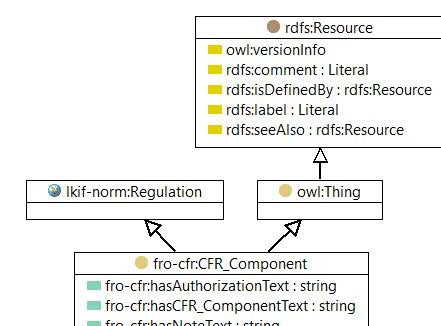

-

owl:Class

|
| owl:Class |
|
| CFR Component |
|
| A superclass for CFR components: Chapter, Paragraph, Part, Section, Title and Volume |
| References | |
|---|---|
| |
© 2016 Jayzed Data Models Inc. generated with TopBraid Composer back to Financial Regulation Ontology or documentation index